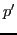
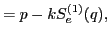
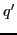
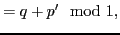
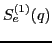
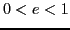
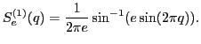
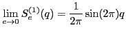
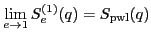

Next:
Truncated standard map
Up:
2-dimansional maps
Previous:
Piecewise linear map
Sharpen standard map
The map is defined as




where
is a parameter and

is defined, for

, as

Note that

and

.
akaishi
2011-06-13